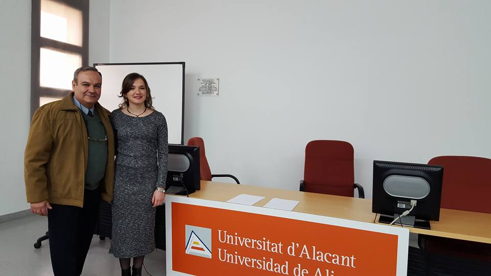
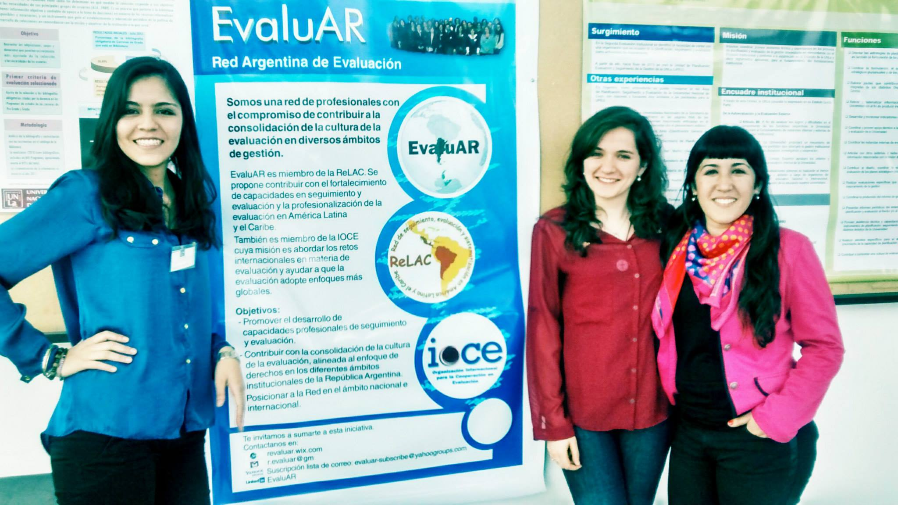
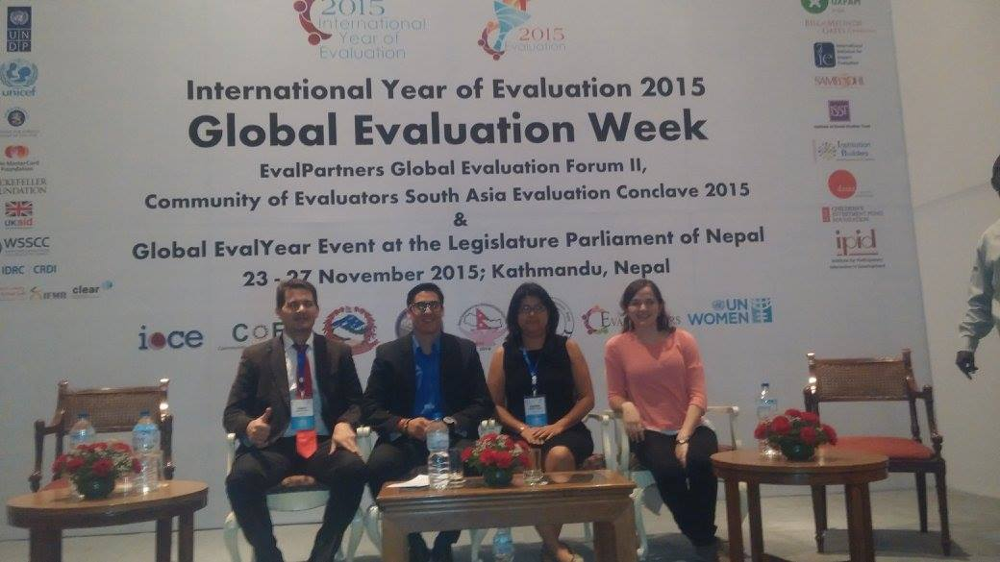
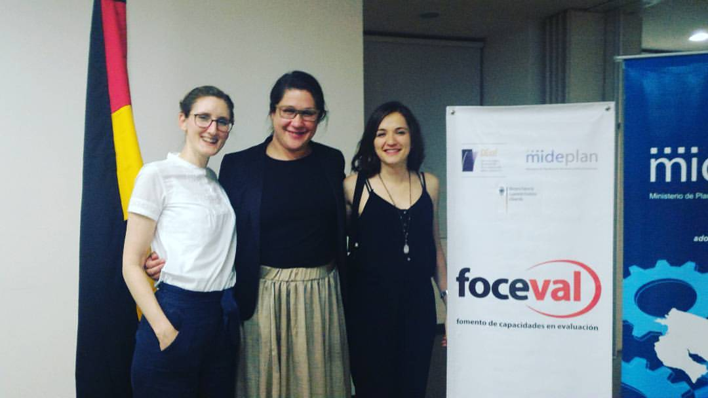

PROYECTOS
Premios
Premio Extraordinario Matricula de Honor Expedida por Universidad de Alicante · enero 2017; Matrícula de Honor en Master en Cooperación al Desarrollo,
Becaria doctoral en CONICET, Expedida por CONICET · dic. 2014Expedida por CONICET · dic. 2014, la cual se encuentra Asociada con CONICET.
Becaria Expedida por Banco Santander · oct. 2014 la cual se encuentra Asociada con Universitat d'Alacant. Becaria para realizar Master en Cooperación al Desarrollo.
Publicaciones
De entre mis publicaciones debo destacar las siguientes:
- Cáncer de Cuello de Útero: Acceso de las mujeres al Papanicolau y a las "Navegadoras" para prevenir la enfermedad Revista Contribuciones Científicas Universitarias y Preuniversitarias · 1 jul. 2020 En colaboración con otros autores.
- Políticas territoriales en la era del extractivismo: ¿(re)patriarcalización de los territorios? 3º Congreso Nacional de Sociología Pre-Alas Perú 2019 y 2º Jornadas Provinciales de Sociología de San Juan · 2 mar. 2020
- Evaluación de políticas específicas de género: el caso del Programa de Prevención de Cáncer Cervicouterino en San Juan, Argentina. Revista Reflexiones desde las Ciencias Sociales · 1 ene. 2018
- La prevención del cáncer cervicouterino analizada desde la investigación evaluativa. Valoración multi-actoral sobre el alcance de la política en el Gran San Juan. RevIISE · 1 ene. 2018. En Colaboración con otros autores.
- Saberes locales y actores institucionales. Evaluación de la Iniciativa Maternidades Seguras y Centradas en la Familia-MSCF- (Argentina) Dejar Huella, Historias de evaluaciones que marcaron la diferencia · 1 ene. 2018. En Colaboración con otros autores.
Dejar huella. Historias de evaluaciones que marcaron la diferencia.
EvalPartners
The EvalPartners Global Evaluation Forum II was held in Kathmandu, Nepal on 23 and 24 November 2015 in the context of the Global Evaluation Week, to further clarify the "what" and "how" of the Global Evaluation Agenda 2016-2020 "EvalAgenda2020".
Testimony by Alejandra Lucero (English)Participación
 Puedo destacar la participación en los siguientes proyectos:
- La evaluación participativa en Argentina y América Latina: condiciones y mecanismos facilitadores de la participación ciudadana en los procesos de evaluación de políticas, programas y proyectos. ene. 2020 - dic. 2022. Miembro del equipo de apoyo, Asociada con CONICET Aptitudes: Investigación cualitativa · Evaluation
- Resonancias en el territorio: un acercamiento a los saberes y prácticas de las/los Agentes Sanitarios y a la perspectiva de las mujeres, sobre la implementación de los métodos de tamizaje para prevenir el CCU en San Juan desde enero 2020 a diciembre 2022. En carácter de Codirectora del proyecto, con otros colaboradores
Asociada con Universidad Nacional de San Juan
El objetivo general es conocer la percepción de las/os agentes sanitarios y de las mujeres en edad objetivo para el tamizaje, respecto a la implementación de las estrategias para prevenir el Cáncer de Cuello de Útero en San Juan.
El acceso a las pruebas y controles permite un diagnóstico oportuno, que favorece el control del cáncer al aumentar las posibilidades de curarse y sobrevivir a la enfermedad. Las/os agentes sanitarios actúan como nexo entre el sistema de salud público y los diversos sectores de la sociedad, promoviendo el conocimiento, respeto y fortalecimiento de los derechos de la salud en el territorio. Las mujeres son las destinatarias principales de la política, por lo tanto su participación en el estudio resulta necesaria y enriquecedora.
Analizar lo que surja de los relatos sobre cómo se desarrolla la implementación de los métodos de tamizaje y qué influye para que se logre, permitirá caracterizar la brecha que existe entre las estrategias de prevención disponibles y el real acceso a las pruebas de tamizaje.
Aptitudes: Dirección de equipos · Investigación cualitativa · Gender Studies